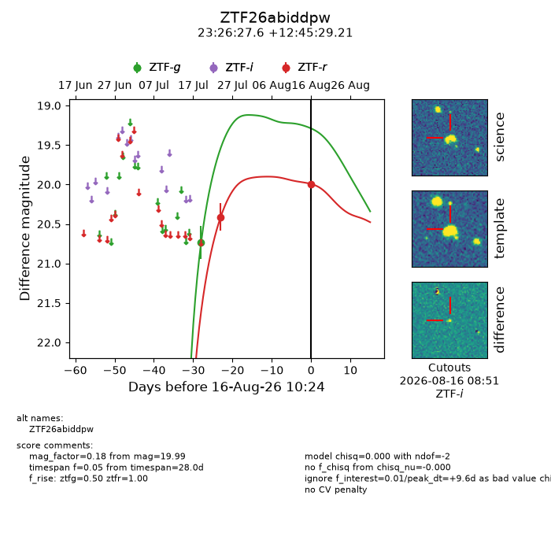
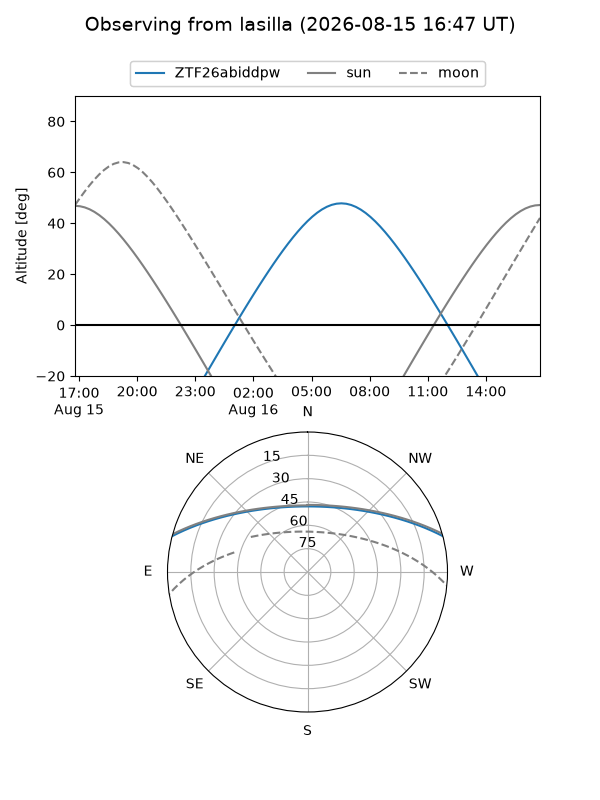
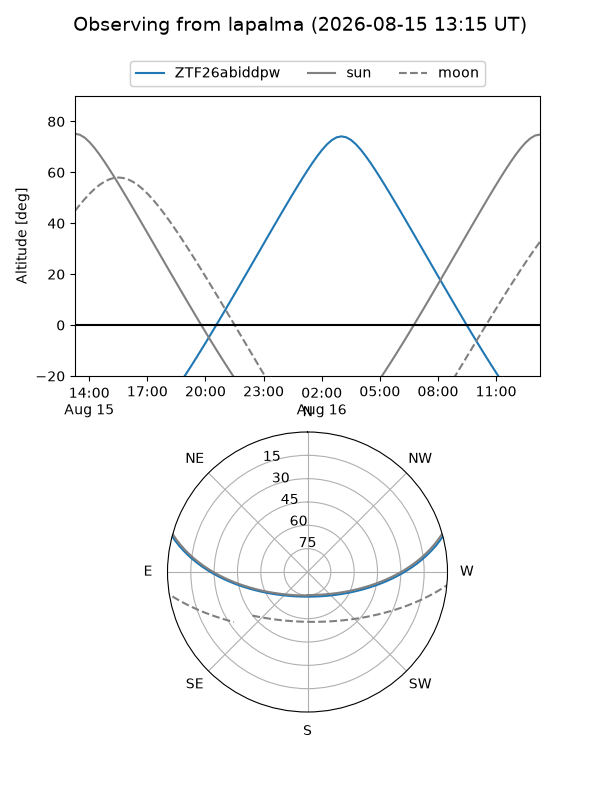
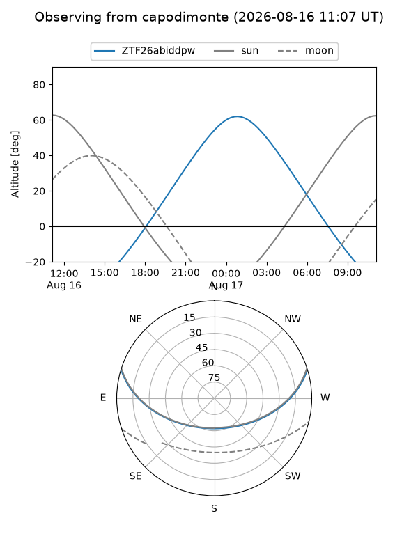
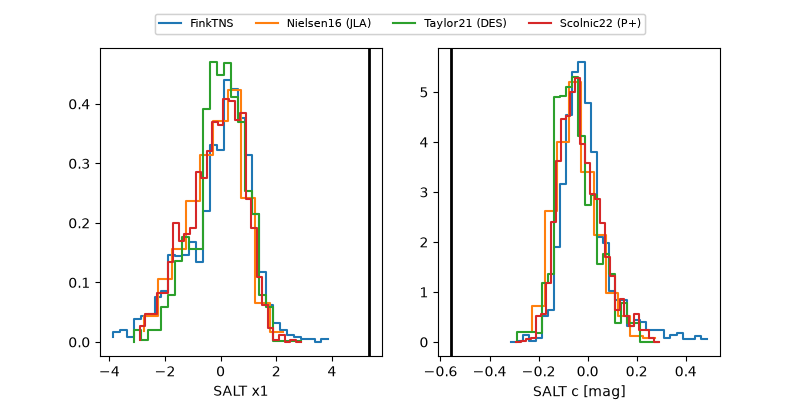

ZTF26abiddpw
Target ZTF26abiddpw at 2026-08-16 10:27
Aliases and brokers:
FINK-ZTF: ztf.fink-portal.org/ZTF26abiddpw
Lasair-ZTF: lasair-ztf.lsst.ac.uk/objects/ZTF26abiddpw
ALeRCE-ZTF: alerce.online/object/ZTF26abiddpw
Direct TNS query: direct search
alt names
ZTF26abiddpw (ztf,fink_ztf)
Coordinates:
equatorial (ra, dec) = 351.6151,+12.75811
equatorial (HMS+DMS) = 23:26:27.63,+12:45:29.21
galactic (l, b) = (92.8888,-45.09925)
Flags:
peak dt: +9.6
Photometry:
last ztfg=20.74, ztfr=19.99
1 ztfg, 2 ztfr detections
Lightcurve

Visibility



Additional plots
